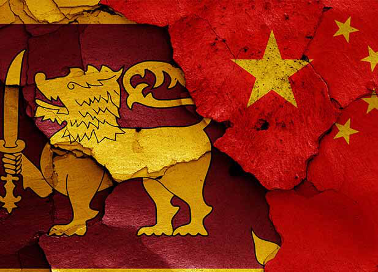

special article
special article
Jaffna Monitor hellojaffnamonitor@gmail.com 24 A ccording to the World Bank's latest report, Sri Lanka's economic growth rate is expected to reach 3.5% this year, consistent with the October forecast, but challenges from high US tariffs and high poverty rates cannot be ignored. President Dissanayake stated that measures have been taken to minimize the impact of US tariffs on the domestic economy. Building a strong economy that will not be shaken by any economic storm is one of the government's top priorities. Given the disparity between economic development levels and economic strength, the US tariff policy will further widen the gap between rich and poor countries, with less developed countries suffering a greater impact. As one of the countries most affected, Sri Lanka's right to development has been severely undermined, and its already fragile economy will be further strained, with a particularly severe impact on the export sector. As Sri Lanka's economic pillar industry and the second-largest source of foreign exchange earnings, the garment industry has experienced a sharp decline in orders and a reduction in garment export revenue, with export values potentially decreasing by 20% How China Stood by Sri Lanka Then — and Now special article BY: Qi Zhenhong, Chinese Ambassador to Sri Lanka

Jaffna Monitor hellojaffnamonitor@gmail.com 25 and threatening tens of thousands of jobs in related industries. Previously, garment factories in Sri Lanka had already canceled Sinhalese and Tamil New Year bonuses, triggering labor disputes and leading to widespread factory shutdowns. Other export industries, such as rubber and plastic products, tea, and gems, may also suffer negative impacts due to the tariffs. In addition, the decline in exports will lead to a reduction in Sri Lanka's foreign exchange earnings, depreciation of the rupee, increased import prices, and exacerbated inflation, affecting its macroeconomic stability and foreign debt repayment capacity, and slowing economic growth. Globally, the United States, disregarding the balance of interests achieved through multilateral trade negotiations, and under the guise of so-called "reciprocity" and "fairness," uses tariff as a weapon to exert maximum pressure for its own selfish gains and subverting the existing international economic and trade order. This unilateralism and hegemonic bullying have severely impacted the global economic order and the multilateral trading system, and seriously harmed the interests and well-being of all countries. Ostensibly, this is done in the name of "protecting domestic industries" and "reshaping supply chain security," but in reality, it continues the traditional approach of politicizing economic and trade issues, bringing unprecedented difficulties and challenges to multilateralism and global economic recovery. Looking back at history, this bullying behavior by the United States seems somewhat familiar. In the early 1950s, when China had just been founded, its development was severely hindered due to the Western countries' embargo and blockade. To survive and develop, China urgently needed to import various materials, including rubber. At this time, under the control of the United States, rubber prices plummeted, while rice prices soared. This caused severe economic difficulties for Ceylon, which depended on rubber exports and rice imports. However, China and Sri Lanka broke through numerous obstacles and signed the historically significant Rubber-Rice Pact, opening the door to friendly relations between the two countries. To retaliate against Ceylon's trade with China, the United States invoked the Battle Act, halting aid to Ceylon and the supply of sulfur needed for rubber plantations. Now, the United States is once again placing its own interests above the common interests of the international community, provoking a new round of tariff and trade wars. In response, China has made it clear: "We have made it very clear that China does not look for a war, but neither are we afraid of it. We will fight, if fight we must. Our doors are open, if the U.S. wants to talk." The reason China firmly says no to US hegemony is that history and reality have repeatedly told the world that appeasement cannot bring peace, and compromise does not lead to respect. Seeking so-called exemptions by harming the interests of others for the sake of one's own selfish and short-term gains is as futile - and dangerous - as bargaining with a tiger for its own skin, and will ultimately lead to losses on both sides, harming others without benefiting oneself. China's standing up is not only to safeguard its own legitimate rights and interests but also to protect the common interests of the international community, including the vast number of small and medium-sized countries, and to defend international fairness and justice. Economic globalization is an unstoppable historical trend, and multilateralism is the inevitable choice for addressing difficulties and challenges. Like many developing countries, China is a defender, contributor, promoter, and beneficiary of multilateralism, economic globalization, and free trade. In the face of a complex and volatile world situation, China's contribution to global economic growth has remained at around 30% for many years, and it has been an important engine of world
Jaffna Monitor hellojaffnamonitor@gmail.com 26 economic growth. China firmly upholds the rules-based multilateral trading system, promotes trade and investment liberalization and facilitation, and works to make the "pie" of common development bigger. Amidst change and continuity, the friendship between China and Sri Lanka has withstood the tests of time and remains one of good friends, good brothers, and good partners. Over the years,with China's participation and support, a large number of infrastructure and livelihood assistance projects have been completed, involving various fields such as ports, highways, water affairs, electricity, and healthcare, significantly improving its infrastructure and investment environment while boosting local employment,strongly supporting Sri Lanka's economic and social development and bringing tangible benefits to the Sri Lankan people. China-Sri Lanka economic and trade cooperation has achieved rapid development, with the Colombo Port City and Hambantota Port are landmark projects of the Belt and Road invested by China, being successfully constructed and steadily advancing, becoming two engines of Sri Lanka's economic development. In January of this year, President Dissanayake visited China for the first time since taking office, holding the dual titles of "the first foreign head of state to visit China in the New Year" and "the new President of Sri Lanka." During his meeting with President Dissanayake, Chinese President Xi Jinping pointed out that China-Sri Lanka relations faces a historic opportunity to build on past achievements and open up the future. Both sides should grasp China-Sri Lanka relations from a strategic height and jointly build a China-Sri Lanka community of shared destiny.Following their talks, the two heads of state jointly witnessed the signing of several cooperation documents in such areas as Belt and Road cooperation, agricultural products, social welfare, and the press, radio and television.In the joint statement issued by China and Sri Lanka, cooperation in various fields such as economy and trade, agriculture, climate change, and education was detailed, from the landmark projects of jointly building the "Belt and Road" to Sri Lankan tea, making the "Working drawing" for China- Sri Lanka's practical cooperation clearer. In the face of the United States' use of tariffs to implement hegemonism and power politics, China has stated its readiness to support Sri Lanka's development and strengthen the long- term partnership between the two countries to address global trade tensions. China-Sri Lanka relations are a model of South-South cooperation, and the two countries are fully capable of building a shared future based on mutual benefit, win-win cooperation, and stable development. Justice will prevail, while injustice is doomed to fail. The US is waging a tariff war, in defiance of global criticism, is pitching itself against the rest of the world. Unity brings strength, and cooperation leads to mutual success.Currently, changes in the world, times, and history are unfolding in unprecedented ways, and the world is entering a new period of turbulence and change. Faced with the rise of unilateralism and protectionism, China has both the courage to say no and the determination to match its words with actions, as well as the confidence to win. Faced with a turbulent world, Sri Lanka should more firmly safeguard its own legitimate rights and interests, believe that China is a more trustworthy partner,follow the historical trend of peace and development, and resist the undercurrents of geopolitical and bloc confrontation, as well as the countercurrents of unilateralism and protectionism. The two countries should safeguard peace, pursue development, and achieve shared prosperity, so as to make solid progress in building the China-Sri Lanka community with a shared future in the new era, and bring greater stability and certainty to this turbulent world.